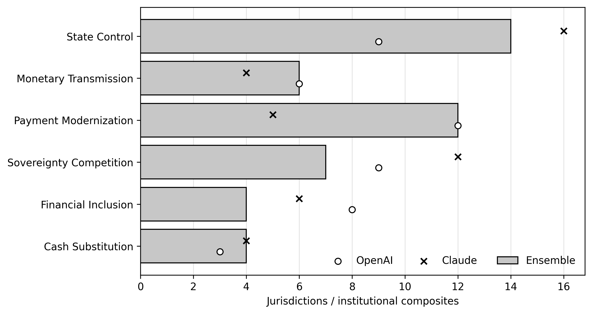
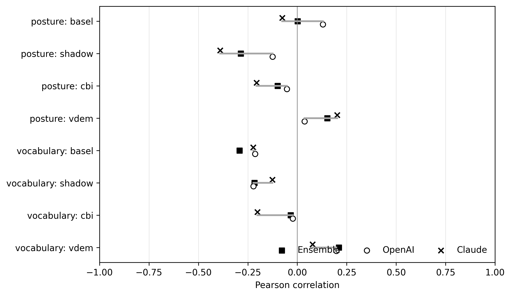

What are central bank digital currencies actually for?
An open-source research project documenting the purpose, development stage and privacy design of central bank digital currencies from the official record. The current v10.2e release uses two independent language-model extractions, exact source-span verification and an explicit ensemble rule; its sampled double-blind human audit is still in progress.
The state of CBDCs around the world
DEVELOPMENT STAGE, DOCUMENTED PURPOSE AND PRIVACY POSTURE FROM THE CURRENT FROZEN CORPUS.
Every coloured jurisdiction is linked to the newest official stage evidence in the corpus. Hover to preview and click to pin the country panel. The panel also shows the ensemble purpose classification, exploratory privacy posture and the documents used in the extraction. Source PDFs are identified but not redistributed; the reproducibility manifest records filenames, page counts and hashes.
Hover over a country
Why this dataset
STATUS TRACKERS SAY HOW FAR A PROJECT HAS MOVED. THEY DO NOT SAY WHAT IT IS FOR.
The same “pilot” label can cover projects aimed at payment modernisation, monetary sovereignty, financial inclusion or tighter state control. We therefore measure six purpose centres and keep privacy vocabulary separate from documented design posture. The corpus contains 113 documents and 3,963 page units; OpenAI and Claude produced 11,358 source-verified statements, deduplicated into 6,949 analytical candidates.
Three findings
CURRENT EXPLORATORY RESULTS — HUMAN VALIDATION IS NOT YET LOCKED.
Privacy language is not privacy commitment. Privacy-family frequency and documented posture correlate only r = 0.219 (95% CI [−0.102, 0.525], n = 39), about 4.8% shared variance.
No tested institutional condition survives multiplicity correction. The largest posture-side association is with informal-economy size (r = −0.286, 95% CI [−0.532, 0.007], Holm-adjusted p = 0.651). It is a lead for further research, not a confirmed effect.
Model choice changes the descriptive picture. Exact code-set agreement is 41.5% among candidates found by both providers, and 38.0% of union candidates come from only one provider. The paper therefore reports an equal-vote ensemble and provider-specific sensitivity.
Privacy posture explorer
Compare each entity’s documented privacy posture with how much of its coded material belongs to the privacy family. The values are derived from the current v10.2e ensemble and remain exploratory until the pre-frozen human audit is completed.
See the six purpose centres

Provider sensitivity remains visible

Open by design
The repository exposes the frozen canonical provider outputs, provenance manifests, exact-span checks, ensemble rule, analysis scripts and derived outputs. A deterministic 365-candidate sample plus 36 dual-empty source units is being reviewed independently by both authors; until those workbooks are locked, the production findings remain explicitly exploratory.